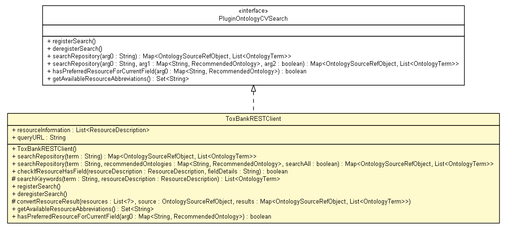

net.toxbank.isa.creator.plugin
Class ToxBankRESTClient

java.lang.Object
 net.toxbank.isa.creator.plugin.ToxBankRESTClient
net.toxbank.isa.creator.plugin.ToxBankRESTClient
- All Implemented Interfaces:
- org.isatools.isacreator.plugins.host.service.PluginOntologyCVSearch
public class ToxBankRESTClient
- extends Object
- implements org.isatools.isacreator.plugins.host.service.PluginOntologyCVSearch
Created by the Toxbank
- Author:
- Nina Jeliazkova (jeliazkova.nina@gmail.com)
Date: 27/04/2012
Time: 13:28
Based on https://github.com/ISA-tools/NovartisMetastore by, Eamonn Maguire (eamonnmag@gmail.com)
Date: 12/09/2011
Time: 16:51
|
Method Summary |
boolean |
checkIfResourceHasField(ResourceDescription resourceDescription,
String fieldDetails)
We can check against current assay and the field |
protected void |
convertResourceResult(List<? extends net.toxbank.client.resource.IToxBankResource> resources,
org.isatools.isacreator.ontologymanager.OntologySourceRefObject source,
Map<org.isatools.isacreator.ontologymanager.OntologySourceRefObject,List<org.isatools.isacreator.ontologymanager.common.OntologyTerm>> results)
|
void |
deregisterSearch()
|
Set<String> |
getAvailableResourceAbbreviations()
|
boolean |
hasPreferredResourceForCurrentField(Map<String,org.isatools.isacreator.configuration.RecommendedOntology> arg0)
|
void |
registerSearch()
|
protected List<org.isatools.isacreator.ontologymanager.common.OntologyTerm> |
searchKeywords(String term,
ResourceDescription resourceDescription)
|
Map<org.isatools.isacreator.ontologymanager.OntologySourceRefObject,List<org.isatools.isacreator.ontologymanager.common.OntologyTerm>> |
searchRepository(String term)
|
Map<org.isatools.isacreator.ontologymanager.OntologySourceRefObject,List<org.isatools.isacreator.ontologymanager.common.OntologyTerm>> |
searchRepository(String term,
Map<String,org.isatools.isacreator.configuration.RecommendedOntology> recommendedOntologies,
boolean searchAll)
|
| Methods inherited from class java.lang.Object |
clone, equals, finalize, getClass, hashCode, notify, notifyAll, toString, wait, wait, wait |
resourceInformation
public static List<ResourceDescription> resourceInformation
queryURL
public static String queryURL
ToxBankRESTClient
public ToxBankRESTClient()
searchRepository
public Map<org.isatools.isacreator.ontologymanager.OntologySourceRefObject,List<org.isatools.isacreator.ontologymanager.common.OntologyTerm>> searchRepository(String term)
- Specified by:
searchRepository in interface org.isatools.isacreator.plugins.host.service.PluginOntologyCVSearch
searchRepository
public Map<org.isatools.isacreator.ontologymanager.OntologySourceRefObject,List<org.isatools.isacreator.ontologymanager.common.OntologyTerm>> searchRepository(String term,
Map<String,org.isatools.isacreator.configuration.RecommendedOntology> recommendedOntologies,
boolean searchAll)
- Specified by:
searchRepository in interface org.isatools.isacreator.plugins.host.service.PluginOntologyCVSearch
checkIfResourceHasField
public boolean checkIfResourceHasField(ResourceDescription resourceDescription,
String fieldDetails)
- We can check against current assay and the field
- Parameters:
resourceDescription - - resource to checkfieldDetails - - field to look for
- Returns:
- true or false. True if the resource should be searched on for this field.
searchKeywords
protected List<org.isatools.isacreator.ontologymanager.common.OntologyTerm> searchKeywords(String term,
ResourceDescription resourceDescription)
registerSearch
public void registerSearch()
- Specified by:
registerSearch in interface org.isatools.isacreator.plugins.host.service.PluginOntologyCVSearch
deregisterSearch
public void deregisterSearch()
- Specified by:
deregisterSearch in interface org.isatools.isacreator.plugins.host.service.PluginOntologyCVSearch
convertResourceResult
protected void convertResourceResult(List<? extends net.toxbank.client.resource.IToxBankResource> resources,
org.isatools.isacreator.ontologymanager.OntologySourceRefObject source,
Map<org.isatools.isacreator.ontologymanager.OntologySourceRefObject,List<org.isatools.isacreator.ontologymanager.common.OntologyTerm>> results)
getAvailableResourceAbbreviations
public Set<String> getAvailableResourceAbbreviations()
- Specified by:
getAvailableResourceAbbreviations in interface org.isatools.isacreator.plugins.host.service.PluginOntologyCVSearch
hasPreferredResourceForCurrentField
public boolean hasPreferredResourceForCurrentField(Map<String,org.isatools.isacreator.configuration.RecommendedOntology> arg0)
- Specified by:
hasPreferredResourceForCurrentField in interface org.isatools.isacreator.plugins.host.service.PluginOntologyCVSearch
Copyright © 2012 Toxbank. All Rights Reserved.